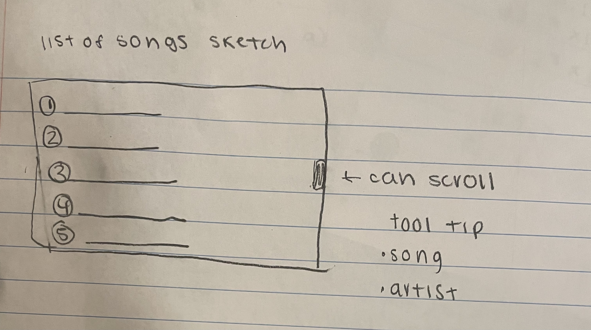
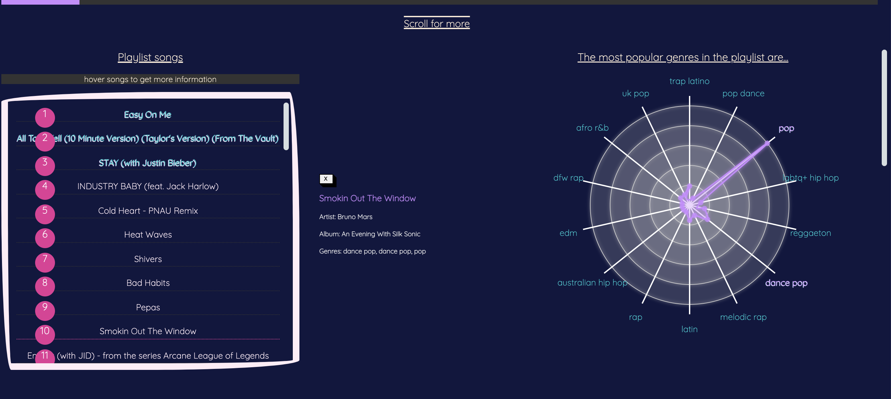
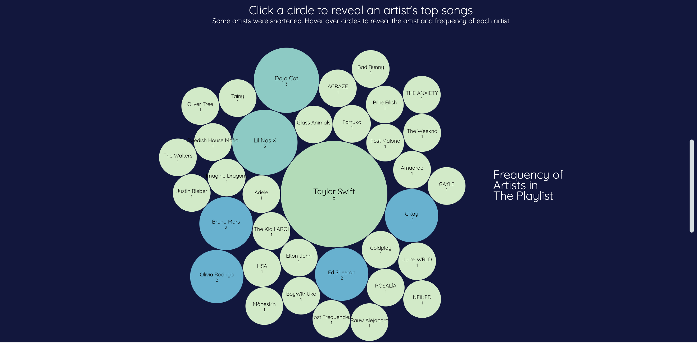
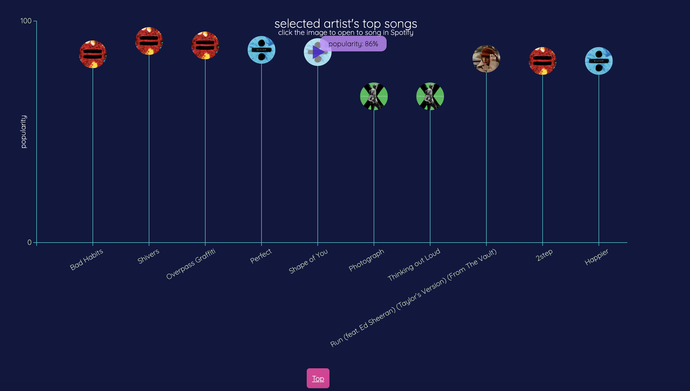

Our project will take data from spotify and visualize the makeup of playlists. Our motivation for this project is that everyone listens to music and it is a very customizable experience. Creating a platform to share music that interests you and make the statistics of individual playlists digestible would allow people to share music more easily.
We were inspired by spotify wrapped-- statistics that spotify puts together for their users at the end of each year that compiles their music preferences and gives them statistics like most listened to artist, song and genre
We hope to create an interactive platform where users can learn more about popular music in various genres. We hope to give users information on genres in the playlists they are interested in and the top artists on various playlists. We want to display the list of songs in preloaded playlists so users can find new music. We hope to allow users to learn more about the artists they like to listen to by giving them information on their favorite artist's most popular songs, even if those songs are not in the specific playlists.
We are trying to show people the aggregate of the music in different playlists. We are trying to create a story where people can learn about popular music. We hope to allow users to personalize their experience on our platform by picking playlists they are interested in and artists they are interested in from our preloaded data.
Music is typically a very personalized experience. We hope to create a new perspective by giving people a way to learn more about music in playlists they are interested in in an easily digestable way
We want users to be able to pick the playlist that interests them the most by the time we finish the project from the preloaded playlists we collected data for with the spotify API. Once users select a playlist, we want them to see all the songs in the playlist and which genres are most represented in the playlist. We want users to see which songs have which genres. Additionally, we want to create a visualization for the users to see the frequency of each artist in the playlist. Lastly, we want the user to be able to explore the top songs on spotify for each artist in the playlist and play their top songs on spotify.
Our data will come from the python Spotify API (spotipy). We will create python scripts that grab the data we need for our visualizations and puts the data in a format we can use for our project (json or csv).
We think a spider chart for the genre, bubble chart for the artist and lollipop chart for the top songs will help us accomplish our goals
We considered a bar chart for showing the most represented artists and a pie chart for showing the most represented genres. We ultimately thought the bar chart could be too clutterred in larger playlists and decided we could be more creative with a spider chart than a pie chart for genres.
We wanted to focus on making sure our visualizations were polished instead of focusing on the backend of this project. To do this, we decided it would be helpful to put playlists preloaded into our visualization. This will allow users to pick whichever playlist interests them the most and explore music within that playlist. By giving users multiple playlist options, users still can personalize their experience on our platform. We still think our original ideas of a spider chart, bubble chart and lollipop chart will help users make sense of the playlists Additionally, because people may not know the specific songs that are in the preloaded playlists, we want to list the songs in the playlist so users can see exactly which songs are being visualized in the charts
From the user studies, we learned that we have to include more instructions on our page to make the visualizations more intuitive and tell a story. We want to improve the flow of our design. We also found bugs in two of our hover functions. We will add titles for every graph, add more text on the page saying to scroll, make our instructions have a bigger font, make it so the user is automatically scrolled down to the lollipop chart when they select a bubble, and fix bugs in our CSS. We will also brainstorm ways to make the spider chart more interactive
When you open our page you see our logo, which influenced the colors for our design. Users have the ability to pick whichever playlist they are interested in from our dropdown menu. In this screenshot you can also see our navigation bar, which makes it possible for users to move between our visualizations without scrolling if that is more intutive to them.
Once you pick a playlist, the visualizations at the top of the screen are the list and spider charts. The list shows every song in the playlist and the spider chart shows the most represented genres in the playlist. You can hover over the songs in the list to reveal the artist, album and genres for the song. When you do this, the genres in the song change colors on our spider chart.
If you continue scrolling on our visualization, you see a bubble chart. The bubble chart shows relative frequency of each artist in the playlist. If there are many artists in the plyalist, some of the artists will be shortened and you can hover over the circles to see the full name. Additionally, you can click on the artists in the bubble chart to reveal their top songs in the lollipop chart. Once you click on a bubble, the bubble is highlighted and the user is automatically redirected to the lollipop chart.
Once you click on a bubbe, you are redirected to the lollipop chart that shows the top songs on spotify for each artist. The top of the lollipop is the album cover for the song. You can hover over the lollipop to reveal the exact popularity score for each song. When you hover, you can see a play button and click on the top of the lollipop to be redirected to spotify to play each song.
Using our visualizations, we have a few key takeaways from the data. First, we learned that the data was skewed due to the fact that we grabbed the data from spotify the week that Taylor Swift released Red. As a result, she is overrepresented on all the top song playlists. Second, we learned that American pop is overrepresented globally for top songs. Despite Spotify being a global platform with music from around the world, majority of top songs are American pop. Lastly, we learned about how spotify breaks down genres. For example, there are so many different types of pop music that Spotify has categories for-- including pop rock, pop rap, dance pop, Uk pop, American pop, Canadian pop, etc.
We think that we answered our goals well. Users can pick whichever playlist interests them and explore visualizations on the playlist. They can see all songs in the playlist, the most represented genres and artists in the plyalists and can explore an artist's top songs.
We really like the design of our visualization and think they work well. However, given unlimitted time we would have made it so users can use their own playlists for visualizing music instead of just the preuploaded one because people are most interested in their own music taste.